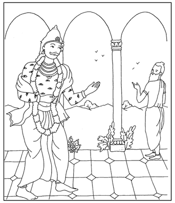
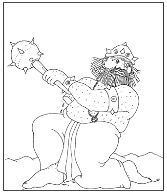
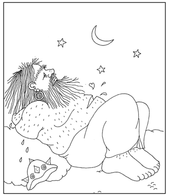

La Historia De Vritrasura Esta fue sin duda una gran ofensa. Brihaspati pudo ver que el orgullo era la causa del insulto de su discípulo y se fue a su casa. Indra de inmediato se dio cuenta de su grave error, y se lamentó ante todos diciendo: "Debido a mi orgullo que surge de la opulencia material, y por mi falta de inteligencia ofendí a mi guru. Yo maldigo esta riqueza que será la causa de mi caída".  Entonces Indra decidió ir a pedir perdón a su maestro espiritual; pero Brihaspati se hizo invisible, e Indra, junto con sus semidioses asistentes, no pudieron encontrarlo en ninguna parte. Los demonios por otro lado supieron que los vedas estaban débiles por haber ofendido a su guru, y aprovecharon esta situación para atacarlos. Hubo una gran guerra en la que los semidioses fueron vencidos; y con sus cuerpos heridos por las flechas de sus adversarios, decidieron ir a pedir refugio al señor Brahma. El señor Brahma los retó por haber ofendido a su guru y les dijo: "Porque ahora los demonios han servido muy bien a su maestro Sukracarya, se han vuelto muy poderosos, tanto, que incluso podrían adueñarse de mi planeta. Todo aquél que sirve a los brahmanas, al maestro y a Krsna, alcanza una sólida y firme posición en la vida. Les aconsejo que se refugien en el poderoso brahmana Visvarupa, famoso por su gran ascetismo, pero deben tolerar el hecho de que también simpatiza con los asuras." Entonces los devas fueron donde Visvarupa y después de abrazarlo como a un hijo le dijeron:"|Oh Visvarupa! estamos muy afligidos por haber sido derrotados por nuestros enemigos los demonios, por favor, protégenos con el poder de tu austeridad. Te elegimos como nuestro maestro espiritual." Visvarupa aceptó ser su sacerdote pero sólo para servirlos, él no quería dejar su posición de brahmana pobre y austero para volverse el sacerdote rico de los semidioses, pues eso acabaría con su avance espiritual. Sólo para servir a los devas, a quienes veía como un padre, el se mostró bien dispuesto a ayudarlos, y le entregó a Indra el escudo de Narayan, llamado el "Narayan Kavaca." con el cual derrotó Indra a los demonios y recuperó el cielo. Visvarupa tenia tres cabezas. Por el lado de su padre él era pariente de los semidioses, y por el lado de su madre estaba emparentado con los demonios. As¡ es que él, en voz alta hacía las ofrendas a los semidioses, y en voz baja, sin que los devas se dieran cuenta, hacia ofrendas a los demonios. Cuando Indra supo esto se enojó mucho y mató a Visvarupa cortándole las cabezas. Sus cabezas se transformaron en dos tipos de codorniz y la tercera en un gorrión. Tvasta, el padre de Visvarupa, se enojó mucho con Indra e hizo ofrendas en el fuego de sacrificio para que naciera un enemigo de los devas. As¡ fue como apareció el enorme, temible y pavoroso Vritrasura. Era muy grande y negro, su pelo, bigote y barbas eran rojos, como el cobre derretido. Al caminar temblaba el mundo, y su boca abierta amenazaba con tragarse los planetas y las estrellas. Al verlo, todos huyeron muy asustados. Este demonio se llamaba "Vritra". que significa "el que cubre todo". Los semidioses lo atacaron con sus armas divinas pero Vritrasura se las tragó todas. Los devas se sintieron muy desanimados al ver el poder tan grande de este demonio, y le oraron al Señor Narayan pidiéndole Su protección. Al escuchar sus oraciones el Señor apareció primero en sus corazones y luego se mostró ante ellos, rodeado por dieciséis de Sus asistentes. Los devas lo reverenciaron y le siguieron orando, y le pidieron que encarnara para matar a Vritrasura. El Señor Narayan le aconsejó a Indra que fuera donde el sabio Dadhyanca o Dadhici y que le pidiera su cuerpo, el cual era muy poderoso porque estaba investido con la energía del Narayan Kavaca. As¡ los semidioses fueron donde Dadhici y le pidieron su cuerpo para poder hacer una arma como un rayo, con el poder que guardaban sus huesos. Dadhici le dijo a los semidioses que era muy difícil dar el cuerpo, porque uno esta muy apegado a él. Pero los semidioses sólo se sonrieron al oír esto, porque sabían que Dadhici era un gran sabio y no estaba apegado a nada material, y le dijeron: "Un santo como tú hace cualquier cosa por el bien de los demás, incluso puede dar su propia vida."
Dadhici consideró que tarde o temprano tendría que dejar su cuerpo, y que éste debía ser usado para el servicio de los demás. "Aquel que sufre ante el dolor de los demás -dijo él a los devas- y el que se alegra cuando ve a otros felices, es alguien que conoce la religión verdadera." Si uno no tiene compasión por los otros -les dijo también- es detestado incluso por los seres inmóviles". Tras decir esto y dar otras instrucciones, entró en trance meditando en el Señor, y dejó su cuerpo, sin ni darse cuenta, sin sentir ningún dolor. Entonces Visvakarma, el arquitecto de los semidioses, hizo una poderosa arma con la energía de los huesos de Dadhici. Esta arma la tomó Indra, quien, brillando por el poder que Narayan le había dado, montó su elefante Airavata; y rodeado por los demás semidioses, y glorificado por los sabios, se dirigió a matar a Vritrasura, dando con esto placer a los tres mundos. La batalla fue a orillas del rió Narmada, donde Indra y su ejército enfrentó a Vritrasura y su armada de demonios. Ellos lanzaron miles de lanzas, flechas y otras armas peligrosas... Eran tantas que cubrían el cielo, pero los semidioses, siendo muy hábiles guerreros, destruyeron todas estas armas en el aire, sin que hirieran a ninguno. Luego los demonios lanzaron rocas, picos de montañas, arboles enormes, pero corrieron la misma suerte que las armas con que antes habían atacado. Al ver tanto poder de los semidioses, los demonios se asustaron y comenzaron a huir del campo de batalla. Incluso grandes guerreros corrían temerosos. Ante lo cual Vritrasura llamó a los demonios y les dijo:"Oh Puloma, Namuci, Maya, Anarva... todos estamos destinados a morir, pero si morimos en batalla, seremos promovidos a planetas superiores, y ganaremos la fama de haber luchado con valor. Ya saben que hay dos formas gloriosas de morir, una es a través del trance en el yoga, y la otra es en el campo de batalla, sin mostrar la espalda al enemigo, sin escapar". Pero los asuras estaban muy asustados y siguieron huyendo. Los devas aprovecharon esto para atacarlos, por lo que Vritrasura les dijo: "Qué‚ ganancia hay en matar a estos demonios que huyen temerosos? Su nacimiento es tan inútil como el excremento de sus madres. Por matarlos no hacen nada glorioso, ni ganarán con ello el mérito para entrar en el cielo." La voz del demonio era tan terrible que los devas espantados se desmayaron. Entonces él tomó su terrible tridente, y avanzó haciendo temblar la tierra con sus pasos. Avanzó pisando a los semidioses, tal como un elefante que aplasta cañas de bambú. Ante esto, Indra furioso le lanzó su mazo, difícil de evitar, pero Vritrasura sin esfuerzo la agarró con su mano izquierda, y lo usó para golpear a Airavata, el elefante que porta a Indra. Este acto heroico gano el elogio de ambos bandos. Indra, junto con su elefante, cayeron a catorce yardas del lugar, tal fue la fuerza del terrible impacto. El noble Vritrasura espero a que Indra se levantara y curara con su mano que produce néctar a su elefante Airavata; luego, al ver a Indra parado en silencio ante el, recordó como este había matado a su hermano Visparupa y le dijo: "Me siento afortunado por estar parado ante el asesino de mi hermano, a quien mataste solo para disfrutar de tu cielo. El era un brahmana correcto y bueno, y ahora, cuando atraviese tu corazón de piedra con mi tridente, quedare libre de la deuda que tengo con el. Cuando mueras ni el fuego te querrá quemar, ni los buitres te querrán comer... Por otro lado, si tu me matas me aliviare de mi karma, y podré alcanzar la gracia de devotos como Narada. ¿Porque no usas el rayo que te dio Visnu, en lugar del tridente que me acabas de lanzar? Si me atacas con esa arma, es seguro que me vas a vencer. Debido a que el Señor está de tu lado, tienes la victoria asegurada. Cuando muera pensaré en el Señor e iré donde El, pues ese es mi único deseo. "
Tras decir esto Vritrasura lanzo a Indra su terrible tridente, que ardía como el fuego, brillante como un meteoro. Pero Indra lo destrozo sin temor con su rayo, y con la misma arma le corto un brazo. Aun así, con un solo brazo, el demonio tomo un mazo de hierro y golpeo a Indra en la mandíbula y luego a su elefante Airavata. El golpe fue tal que Indra soltó el rayo de sus manos. Los habitantes del cielo, devas, asuras. caranas y siddhas. elogiaron el acto heroico de Vritrasura, pero al ver la condición lamentable de Indra, se lamentaron gritando ¡Ay, ay!  Indra estaba desanimado e indeciso, no se atrevía a tomar el rayo que se le había caído; pero Vritrasura lo entusiasmó diciéndole: "¡Vamos Indra!, solo el Supremo no conoce derrota. Levántate e inténtalo de nuevo. Todos estamos bajo el absoluto control del Señor. El nos mueve como marionetas a Su antojo, y todo sucede de acuerdo a su voluntad. Así como al morir uno pierde todo aun sin desearlo, de igual modo uno gana toda victoria cuando El lo dispone. Lucha entonces con animo, como yo lo estoy haciendo ahora, a pesar de que me falta un brazo, y de que tu posición es mas ventajosa que la mía." A estas palabras de Vritrasura Indra le dijo: ¡Oh gran demonio! puedo ver que has superado la energía ilusoria del Señor y que eres un gran devoto, situado en el modo de la bondad. Las almas como tu navegan en un océano de néctar, y no ambicionan los charcos de agua que hay en este mundo." De esta manera, ambos hablaron de Bhakti en el campo de batalla. Luego Vritrasura, con su brazo izquierdo, lanzo su maza de acero contra Indra, pero este ultimo la destruyo con su rayo llamado Sataparvan, y a la vez, le corto el brazo que le quedaba.
Ahora Vritrasura sangraba por sus brazos amputados, y se veía muy hermoso. Asumió un tamaño inmenso y abrió su enorme boca, tan grande, que parecía que iba a devorar todo el cielo. Movía su lengua como una gigantesca serpiente, sus dientes causaban terror y de pronto... ¡Se tragó a Indra junto con su elefante! Esto causó un clamor en el cielo, donde sus habitantes horrorizados ante la posible derrota de Indra exclamaron: ¡Qué calamidad! ¡Qué calamidad! Pero el arma protectora que Indra poseía, el Narayan Kavaca, era igual a Narayan, el Señor Supremo, por lo cual Indra no murió en el vientre de Vritrasura, sino mas bien, con su rayo le corto el abdomen y salió por ahí, para luego darle muerte cortándole la cabeza. Su cuello era tan grande y fuerte que Indra demoro trescientos sesenta días en cortarlo. Cuando Vritrasura murió, su alma ascendió al cielo para ir a servir a su Señor Sankarsana, y volverse un asociado eterno de El.  Al morir Vritrasura todos los semidioses estaban muy felices, menos Indra, que debió huir de la reacción de haber matado al brahmana Vritrasura. Esta reacción vino como una vieja tuberculosa, que hedía a pez, y que lo perseguía para atraparlo. Indra corrió por el espacio y al fin se escondió en las fibras de un loto en el lago Mano-sarovar. Debió estar mil años escondido allí, solo y pasando hambre. Después de ese largo tiempo salió de su escondite y brahmanas como Marici, celebraron un sacrificio de caballo para liberarlo de toda reacción. En este sacrificio adoraron al Señor Supremo, y así Indra volvió a su antiguo puesto, y fue honrado por todos. Esta historia es muy auspiciosa y quien la escucha se libera de su karma, prolonga su vida, derrota a sus enemigos, incrementa su opulencia y reputación y avanza en su sendero espiritual. Hari Bolo!!! |